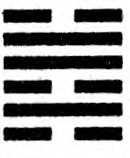

47. K’UN / Baskı, eziyet
I Ching’in en büyük tehlike işaretlerinden biri budur. Anlamı büyük zorluklar, fakirlik ve eziyettir. Tui, yani gölün altında yatan K’an, yani su, tükenişi, bitkinliği simgeler. Göl suyu tamamen çekildiği için göl boşalmıştır. İki güçlüyü tutan zayıf ve bir güçlüyü kapatan iki zayıf çizgi, kısıtlama, engelleme ve eziyeti anlatırlar. Altı çizginin tümü de olumsuzdur, ama en güçlü yeniden doğuşlar, büyük şanssızlıkları izlediğine göre bu zor dönemi kavramak yararlı olur.
Karar
Eziyet. Başarı. Yılmamak. Ulu kişiyi şans bekliyor, o zaman hata yok Sözle belirtilenlere inanılmaz.
Felaketler bizi ya batırır ya da kurtarır. Bu felaketlerden ders almazsak rahata hiç eremeyiz. Ders olarak, meziyetleri geliştirebilmek büyüklük ister. Dışa vurulan meziyetlerse etkili değildir. Durmaksızın kişiliğimizi geliştirirken, bu durumu alçakgönüllülükle yansıtmalıyız. Görüntü
Susuz göl, eziyeti simgeler. Üstün kişi, hayatının, kendi yolunda yılmamasına bağlı olduğunu bilir.
Kişi hayal kırıldığı içinde, kolay rüyalarının ve yozlaşmış prensiplerinin boşluğunu görerek krize girebilir. İnsanın hayatını belirleyen şey, tavır ve hareketleridir. Durumunun doğasını ve ruhunun derinliklerini araştırmaktan daha hayati bir şey yoktur.
Çizgiler
Altta altı: Kuru ağacın dalları arasında sıkışıp karanlık vadiye bakar. Üç yıl boyunca hiçbirşey görmez.
Zorlukların fazla güçlü olduğu fikrine yenilmemelidir. Herşey ne denli olumsuz görünse de hayal kırıklıklarının üstesinden gelinebilir.
İkinci sırada dokuz: Yiyip içse de baskı altındadır. Kızıl koşum takımlı biri yaklaşır. Fedakârlık yararlıdır. İnsiyatif almak şanssızlık getirse de kişi suçlanamaz.
Dışardan herşey yolunda gözükse de, kişi memnun değildir. Yüksek sınıf Çin’de kırmızı kılıklardan anlaşıldığından, yukardan yardım geldiği düşünülür. Fakat sorunlar çözülmez. Yeterli hazırlıkların yapılması ve farklılıkların düzenlenmesi için anlaşma ve ruhî destek gereklidir. Sabırsızlık sorun yaratır.
Üçüncü sırada altı: Kendini taşlarla bağlayan kişi, sivri bitki ve dikenlerin üstüne oturur. Evde karısını göremez.
Çalışkan kişi çalışmanın yararını görse de, dönem gerçekten zordur. Hassas olmamak yıkıcıdır. Fakat kişi hiçbirşeyden bile sorunlar yaratmaktadır. Önemsiz şeyler dahi şu anda tehlikelidir. Neşe kaynağı olarak, yumuşak ve barışçıl bir yol belirlenmeli, yoksa utanç giderek yoğunlaşacak.
Dördüncü sırada dokuz: Yavaşça giden şatafatlı arabada kıstırılmış. Utanç verici ama sonu iyiye varıyor.
Büyük olasılıkla yeni zorluklara yol açan ilerleme. Bir çeşit maddi başarı, varlıklı veya güçlü kişilerle olan bağı kuvvetlendiriyor. Bu gibi kişileri memnun etmek için insancıl prensiplerden taviz verilmemeli.
Beşinci sırada dokuz: Kızıl koşum takımlı biri tarafından kıstırılmış ve burnuyla, ayakları kesilmiş. Bunu kabullendikçe neşe yavaş yavaş kendini gösteriyor. Fedakarlık yararlı.
Aşağıdan ve yukarıdan baskı var. Otoritelerden yardım ummak yerine, bütünlük korunmaya çalışılırsa yavaş yavaş rahatlanır.
Üstte altı: Bitkilere tırmanmaktan sıkılan kişi kendi kendine «Eğer hareket edersem pişman olurum,» der. Sözünü geri alıp, ilerlerse iyiye belirti.
Fazla kısıtlanmış birinin aşırı tedbirliliğinden söz edilir. Sorunlar gerçek değil hayalidir veya düzelmek üzeredirler. Etkili davranışlar, durumun idare edilebileceğini gösterecekler.